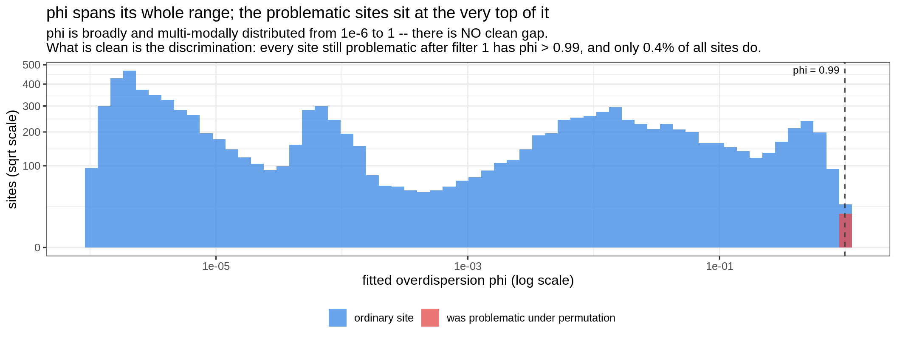
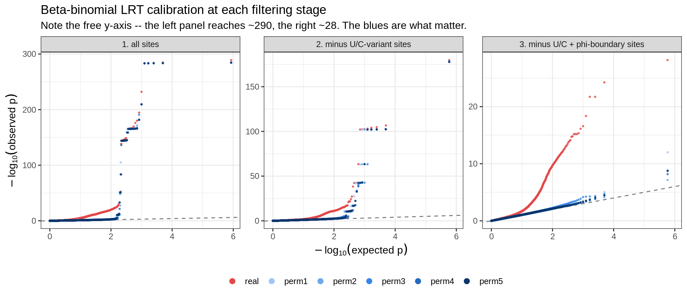

Last updated: 2026-08-25
Checks: 6 1
Knit directory: pumseq/
This reproducible R Markdown analysis was created with workflowr (version 1.7.0). The Checks tab describes the reproducibility checks that were applied when the results were created. The Past versions tab lists the development history.
The R Markdown file has unstaged changes. To know which version of
the R Markdown file created these results, you’ll want to first commit
it to the Git repo. If you’re still working on the analysis, you can
ignore this warning. When you’re finished, you can run
wflow_publish to commit the R Markdown file and build the
HTML.
Great job! The global environment was empty. Objects defined in the global environment can affect the analysis in your R Markdown file in unknown ways. For reproduciblity it’s best to always run the code in an empty environment.
The command set.seed(20260202) was run prior to running
the code in the R Markdown file. Setting a seed ensures that any results
that rely on randomness, e.g. subsampling or permutations, are
reproducible.
Great job! Recording the operating system, R version, and package versions is critical for reproducibility.
Nice! There were no cached chunks for this analysis, so you can be confident that you successfully produced the results during this run.
Great job! Using relative paths to the files within your workflowr project makes it easier to run your code on other machines.
Great! You are using Git for version control. Tracking code development and connecting the code version to the results is critical for reproducibility.
The results in this page were generated with repository version 2bdf308. See the Past versions tab to see a history of the changes made to the R Markdown and HTML files.
Note that you need to be careful to ensure that all relevant files for
the analysis have been committed to Git prior to generating the results
(you can use wflow_publish or
wflow_git_commit). workflowr only checks the R Markdown
file, but you know if there are other scripts or data files that it
depends on. Below is the status of the Git repository when the results
were generated:
Ignored files:
Ignored: analysis/qtl_mapping_summary_cache/
Unstaged changes:
Modified: analysis/qtl_mapping_betabinomial_gof_failed.Rmd
Modified: analysis/qtl_mapping_betabinomial_strategy.Rmd
Note that any generated files, e.g. HTML, png, CSS, etc., are not included in this status report because it is ok for generated content to have uncommitted changes.
These are the previous versions of the repository in which changes were
made to the R Markdown
(analysis/qtl_mapping_betabinomial_strategy.Rmd) and HTML
(docs/qtl_mapping_betabinomial_strategy.html) files. If
you’ve configured a remote Git repository (see
?wflow_git_remote), click on the hyperlinks in the table
below to view the files as they were in that past version.
| File | Version | Author | Date | Message |
|---|---|---|---|---|
| Rmd | 2bdf308 | XSun | 2026-08-25 | update |
| html | 2bdf308 | XSun | 2026-08-25 | update |
suppressMessages({ library(data.table); library(ggplot2) })
knitr::opts_chunk$set(echo = TRUE, warning = FALSE, message = FALSE,
fig.align = "center", fig.width = 11)
PSI <- "/project/xinhe/xsun/pumseq/pumseq_processed/psi_qtl"
DAT <- file.path(PSI, "qtl_betabinomial/strategy_page_data")
qq <- fread(file.path(DAT, "qq_all_runs.tsv.gz"))
lam <- fread(file.path(DAT, "lambda_all_runs.tsv"))
phid <- fread(file.path(DAT, "phi_distribution.tsv"))
phis <- fread(file.path(DAT, "phi_per_site.tsv.gz"))
iter <- fread(file.path(DAT, "phi_iteration.tsv"))
excl <- fread(file.path(DAT, "exclusion_steps.tsv"))
info <- fread(file.path(DAT, "runinfo.tsv"))
gv <- function(k) info[parameter == k]$value
RUN_LV <- c("1. all sites", "2. minus U/C-variant sites",
"3. minus U/C + phi-boundary sites")
ORD <- c("real", paste0("perm", 1:5))
qq[, run := factor(run, levels = RUN_LV)][, dataset := factor(dataset, levels = ORD)]
lam[, run := factor(run, levels = RUN_LV)][, dataset := factor(dataset, levels = ORD)]
COLS <- c(real = "#e34948", perm1 = "#9ec5f4", perm2 = "#6da7ec",
perm3 = "#3987e5", perm4 = "#256abf", perm5 = "#0d366b")
lv <- function(r, d, col) lam[run == r & dataset == d][[col]]
FINAL <- RUN_LV[3]φ is the beta-binomial’s overdispersion parameter, defined here — as
in aod and as VGAM’s rho — by
\[\varphi = \frac{1}{a + b + 1}, \qquad \mathrm{Var}[y] = n\,\mu(1-\mu)\bigl[1 + (n-1)\varphi\bigr]\]
so it is the intracluster correlation and is bounded to (0, 1) by
construction. φ → 0 means a+b → ∞ and the model reduces to
a binomial; φ → 1 means a+b → 0, where the beta
prior collapses onto point masses at 0 and 1 — the model
asserting that every cell line’s true rate is exactly 0 or exactly 1. A
fit that lands there has not really been fitted.
p <- copy(phis)[is.finite(phi)]
ggplot(p, aes(pmax(phi, 1e-6), fill = problematic)) +
geom_histogram(bins = 60, position = "identity", alpha = 0.75, colour = NA) +
geom_vline(xintercept = 0.99, linetype = "dashed", colour = "grey25") +
annotate("text", x = 0.99, y = Inf, hjust = 1.05, vjust = 1.6, size = 3.2,
label = "phi = 0.99 ") +
scale_x_log10() + scale_y_sqrt() +
scale_fill_manual(values = c(`FALSE` = "#3987e5", `TRUE` = "#e34948"),
labels = c("ordinary site", "was problematic under permutation"),
name = NULL) +
labs(x = "fitted overdispersion phi (log scale)", y = "sites (sqrt scale)",
title = "phi spans its whole range; the problematic sites sit at the very top of it",
subtitle = paste("phi is broadly and multi-modally distributed from 1e-6 to 1 -- there is NO clean gap.",
"\nWhat is clean is the discrimination: every site still problematic after filter 1",
"has phi > 0.99, and only 0.4% of all sites do.")) +
theme_bw(base_size = 12) + theme(legend.position = "bottom")
| Version | Author | Date |
|---|---|---|
| 2bdf308 | XSun | 2026-08-25 |
That right-hand pile-up is the motivation for the second filter
below: every site that was still problematic after the U/C step
sits in it. Note the observed maximum is 1 − 10⁻⁶, the
numerical cap in fit_bb_mle, so those optimisations were
driving a+b to zero and were stopped by the guard rather
than converging.
Two filters are applied to the phenotype before mapping. Neither is a curated list of bad sites: both are rules computable from a single site’s own data, so they apply unchanged to any future dataset.
knitr::kable(data.table(
step = c("start", "1. U/C-variant sites", "2. phi-boundary fits", "final"),
what = c("all called pU sites",
"a U/C variant is CALLED on the pU base, so %pU partly reports genotype",
sprintf("the fitted overdispersion phi lands on its boundary (phi > 0.99), i.e. the fit is degenerate. Applied ITERATIVELY -- %s rounds flagged sites (%s)",
gv("phi_rounds_that_flagged"), gv("phi_rounds_detail")),
"used for all QTL mapping"),
removed = c("--", format(as.integer(gv("excluded_UC")), big.mark = ","),
gv("excluded_phi"), "--"),
sites_left = c(format(as.integer(gv("sites_start")), big.mark = ","),
format(as.integer(gv("sites_start")) - as.integer(gv("excluded_UC")), big.mark = ","),
format(as.integer(gv("sites_final")), big.mark = ","),
format(as.integer(gv("sites_final")), big.mark = ","))),
caption = sprintf("Phenotype: %s. Covariate PCs are recomputed on the retained sites at each step.", gv("final_phenotype")))| step | what | removed | sites_left |
|---|---|---|---|
| start | all called pU sites | – | 12,416 |
| 1. U/C-variant sites | a U/C variant is CALLED on the pU base, so %pU partly reports genotype | 1,118 | 11,298 |
| 2. phi-boundary fits | the fitted overdispersion phi lands on its boundary (phi > 0.99), i.e. the fit is degenerate. Applied ITERATIVELY – 4 rounds flagged sites (round 0: +41; round 1: +4; round 2: +2; round 3: +1; round 4: +0) | 48 | 11,250 |
| final | used for all QTL mapping | – | 11,250 |
And the effect on calibration, which is the point of the whole exercise:
knitr::kable(data.table(
run = RUN_LV,
`real lambda` = vapply(RUN_LV, lv, numeric(1), d = "real", col = "lambda"),
`permutation lambda (range)` = vapply(RUN_LV, function(r)
sprintf("%.3f - %.3f", min(lam[run == r & dataset != "real"]$lambda),
max(lam[run == r & dataset != "real"]$lambda)), character(1)),
`real tail` = round(vapply(RUN_LV, lv, numeric(1), d = "real", col = "max_nlp"), 1),
`worst permuted tail` = round(vapply(RUN_LV, function(r)
max(lam[run == r & dataset != "real"]$max_nlp), numeric(1)), 1),
`problematic sites` = vapply(RUN_LV, function(r)
lam[run == r][1]$n_problematic, integer(1))),
row.names = FALSE, digits = 3,
caption = "Under permutation there is no genotype-phenotype relationship, so those rows are the diagnostic: lambda should be 1 and the tail near 0.")| run | real lambda | permutation lambda (range) | real tail | worst permuted tail | problematic sites |
|---|---|---|---|---|---|
| 1. all sites | 2.473 | 0.961 - 1.195 | 289.1 | 285.0 | 26 |
| 2. minus U/C-variant sites | 1.408 | 1.032 - 1.069 | 179.8 | 178.7 | 17 |
| 3. minus U/C + phi-boundary sites | 1.392 | 1.024 - 1.061 | 28.2 | 12.0 | 0 |
0 sites remain problematic after both filters, down from 26. Permutation λ sits at 1.02-1.06, which is what correct calibration looks like, and the real-data λ of 1.392 is the mild inflation expected from genuine cis signal — not the 2.473 seen before any filtering, which was artefact.
Each panel is one filtering stage. Red is the real scan; the five blues are independent phenotype permutations. The permutation series carries the information: shuffling the phenotype destroys any genotype–phenotype relationship, so those points must lie on the dashed line. Where they rise above it, the test is manufacturing signal out of nothing.
ggplot(qq, aes(expected, observed, colour = dataset)) +
geom_abline(slope = 1, intercept = 0, linetype = "dashed", colour = "grey45") +
geom_point(size = 0.55, alpha = 0.75) +
scale_colour_manual(values = COLS, name = NULL) +
guides(colour = guide_legend(override.aes = list(size = 2.6, alpha = 1), nrow = 1)) +
facet_wrap(~ run, nrow = 1, scales = "free_y") +
labs(x = expression(-log[10]("expected p")), y = expression(-log[10]("observed p")),
title = "Beta-binomial LRT calibration at each filtering stage",
subtitle = "Note the free y-axis -- the left panel reaches ~290, the right ~28. The blues are what matter.") +
theme_bw(base_size = 12) + theme(legend.position = "bottom")
| Version | Author | Date |
|---|---|---|
| 2bdf308 | XSun | 2026-08-25 |
w <- dcast(lam, dataset ~ run, value.var = "lambda")
setcolorder(w, c("dataset", RUN_LV))
knitr::kable(w[order(factor(dataset, levels = ORD))], digits = 3,
caption = "lambda by dataset and stage")| dataset | 1. all sites | 2. minus U/C-variant sites | 3. minus U/C + phi-boundary sites |
|---|---|---|---|
| real | 2.473 | 1.408 | 1.392 |
| perm1 | 1.195 | 1.069 | 1.061 |
| perm2 | 0.961 | 1.032 | 1.024 |
| perm3 | 1.102 | 1.046 | 1.037 |
| perm4 | 1.087 | 1.063 | 1.056 |
| perm5 | 1.034 | 1.037 | 1.031 |
t <- dcast(lam, dataset ~ run, value.var = "max_nlp")
setcolorder(t, c("dataset", RUN_LV))
knitr::kable(t[order(factor(dataset, levels = ORD))], digits = 1,
caption = "Largest observed -log10(p): the QQ tail height")| dataset | 1. all sites | 2. minus U/C-variant sites | 3. minus U/C + phi-boundary sites |
|---|---|---|---|
| real | 289.1 | 179.8 | 28.2 |
| perm1 | 285.0 | 178.0 | 12.0 |
| perm2 | 284.9 | 178.7 | 7.2 |
| perm3 | 284.3 | 178.4 | 8.8 |
| perm4 | 284.4 | 177.9 | 8.2 |
| perm5 | 284.6 | 177.6 | 8.7 |
This step is not about the phenotype at all — it is about whether the model was successfully fitted. The distribution shown at the top of this page is not neatly bimodal: φ occupies its entire range with several modes, so 0.99 is a cut in the extreme tail rather than a gap between two clean populations. What is clean is the discrimination:
knitr::kable(phis[is.finite(phi), .(
sites = .N,
`median phi` = signif(median(phi), 3),
`frac phi > 0.99` = sprintf("%.3f", mean(phi > 0.99)),
`median refit failure rate` = round(median(refit_fail, na.rm = TRUE), 3)),
by = .(was_problematic = problematic)],
caption = paste("The MEDIAN ordinary site sits four orders of magnitude from the",
"boundary, but the distribution is broad, so this contrast is",
"between typical values rather than between separated clusters.",
"'refit failure rate' is the fraction of datasets simulated from a",
"site's own fit that then cannot be refitted -- a direct measure of",
"how unstable the fit is."))| was_problematic | sites | median phi | frac phi > 0.99 | median refit failure rate |
|---|---|---|---|---|
| FALSE | 10989 | 0.000644 | 0.002 | 0.0 |
| TRUE | 17 | 1.000000 | 1.000 | 0.4 |
Two things make this a fitter correctness issue rather than a tuned threshold:
betabin_lib.R already rejects boundary fits for
the other parameters — it guards against μ hitting 0 or 1 and
against runaway coefficients (MAX_ABS_COEF). φ was simply
omitted from that set. The right long-term home for this rule is inside
fit_bb_mle, not a site exclusion list.
Data simulated from these fits often cannot be refitted at all. Simulate 30 datasets from a site’s own fitted model and try to recover it: ordinary sites succeed every time, boundary sites fail 20–45% of the time. If a model cannot be recovered from data it generated itself, nothing computed from it is trustworthy.
Removing sites changes the site set, so the covariate PCs must be recomputed — which changes every site’s fit, which can push new sites onto the boundary. The filter therefore has to be iterated to a fixed point rather than applied once.
knitr::kable(iter, digits = 5,
caption = paste("Each round drops the flagged sites, recomputes the PCs, refits",
"everything, and looks for new boundary fits."))| round | n_kept | n_new_flagged | n_dropped_total | phi_cor_vs_prev | phi_maxdiff_vs_prev | of_the_17_flagged |
|---|---|---|---|---|---|---|
| 0 | 11284 | 41 | 41 | NA | NA | 17 |
| 1 | 11243 | 4 | 45 | 0.99760 | 0.70327 | 17 |
| 2 | 11239 | 2 | 47 | 0.99930 | 0.45178 | 17 |
| 3 | 11237 | 1 | 48 | 0.99999 | 0.07850 | 17 |
| 4 | 11236 | 0 | 48 | 1.00000 | 0.00262 | 17 |
It converges after 4 rounds at 48 sites. Applying the filter once would have caught 41 and missed 7.
φ itself is stable for the sites that are kept (correlation 0.9986 between the first and last round, with only 0.11% of sites moving by more than 0.01), which is why convergence is quick — the PCs enter the model through μ, while φ is driven mostly by a site’s own scatter.
Related: the 26 problematic sites · calibration after the U/C filter · full pathology write-up
sessionInfo()R version 4.2.0 (2022-04-22)
Platform: x86_64-pc-linux-gnu (64-bit)
Running under: CentOS Linux 8
Matrix products: default
BLAS/LAPACK: /software/openblas-0.3.13-el8-x86_64/lib/libopenblas_skylakexp-r0.3.13.so
locale:
[1] C
attached base packages:
[1] stats graphics grDevices utils datasets methods base
other attached packages:
[1] ggplot2_3.4.2 data.table_1.14.4 workflowr_1.7.0
loaded via a namespace (and not attached):
[1] tidyselect_1.2.0 xfun_0.38 bslib_0.3.1 colorspace_2.0-3
[5] vctrs_0.6.1 generics_0.1.3 htmltools_0.5.7 yaml_2.3.5
[9] utf8_1.2.2 rlang_1.1.2 R.oo_1.24.0 jquerylib_0.1.4
[13] later_1.3.0 pillar_1.9.0 glue_1.6.2 withr_2.5.0
[17] R.utils_2.11.0 lifecycle_1.0.4 stringr_1.5.0 munsell_0.5.0
[21] gtable_0.3.0 R.methodsS3_1.8.1 evaluate_0.15 labeling_0.4.2
[25] knitr_1.42 callr_3.7.0 fastmap_1.1.0 httpuv_1.6.5
[29] ps_1.7.0 fansi_1.0.3 highr_0.9 Rcpp_1.0.11
[33] promises_1.2.0.1 scales_1.2.0 jsonlite_1.8.7 farver_2.1.0
[37] fs_1.5.2 digest_0.6.29 stringi_1.7.6 processx_3.5.3
[41] dplyr_1.1.2 getPass_0.2-2 rprojroot_2.0.3 grid_4.2.0
[45] cli_3.6.2 tools_4.2.0 magrittr_2.0.3 sass_0.4.1
[49] tibble_3.2.1 whisker_0.4 pkgconfig_2.0.3 rmarkdown_2.21
[53] httr_1.4.5 rstudioapi_0.14 R6_2.5.1 git2r_0.30.1
[57] compiler_4.2.0